|
Лекция 15.
|
| Y1 | Y2 | Y3 | |
|---|---|---|---|
| X1 | 0 | 0 | 0 |
| X2 | 0 | 0 | 0 |
| X3 | 0 | 0 | 0 |
| X4 | 0 | 0 | 0 |
| X5 | 0 | 0 | 0 |
| X6 | 0 | 0 | 0 |
Покажем системе птицу. Вектор X = (111010) прибавляется (поощрение!) к столбцу y1 и вычитается (наказание!) из столбцов y2 и y3. Применен принцип обучения «наказывай за неверное и поощряй за правильное», так называемый принцип «кнута и пряника».
Например, прибавляя к первому столбцу (0,0,0,0,0,0) покомпонентно вектор (1,1,1,0,1,0), получаем новое значение этого столбца (1,1,1,0,1,0).
Второй столбец наказываем, так как птица не есть самолет: из второго столбца (0,0,0,0,0,0) вычитаем вектор (1,1,1,0,1,0). Получаем новое значение столбца: ,(-1,-1,-1,0,-1,0). И так далее…
Матрица после обучения примеру 1, «птица», получается следующего вида:
| 1 | -1 | -1 |
| 1 | -1 | -1 |
| 1 | -1 | -1 |
| 0 | 0 | 0 |
| 1 | -1 | -1 |
| 0 | 0 | 0 |
Предъявим системе самолет Y = (0,1,0). Он обладает крыльями (x1=1), хвостом (x2=1), не имеет клюва (x3=0), имеет двигатель (x4=1), не имеет оперения (x5=0), имеет шасси (x6=1). Вектор (110101) прибавляется (поощрение!) к столбцу y2 предыдущей матрицы и вычитается (наказание!) из столбцов y1 и y3. Получаем следующий вид матрицы после обучения примеру 2:
| 0 | 0 | -2 |
| 0 | 0 | -2 |
| 1 | -1 | -1 |
| -1 | 1 | -1 |
| 1 | -1 | -1 |
| -1 | 1 | -1 |
Предъявим системе объект третьего класса – планер, Y = (0,0,1). Вектор (110000) прибавляется (поощрение!) к столбцу y3 предыдущей матрицы и вычитается (наказание!) из столбцов y1 и y2. Получаем матрицу после обучения примеру 3 следующего вида:
| -1 | -1 | -1 |
| -1 | -1 | -1 |
| 1 | -1 | -1 |
| -1 | 1 | -1 |
| 1 | -1 | -1 |
| -1 | 1 | -1 |
Для проверки результата обучения переведём систему в режим экспертизы. Предъявим ей в качестве примера «птицу». Для этого умножим вектор (111010) на матрицу коэффициентов aij:
| -1 | -1 | -1 | ||
| -1 | -1 | -1 | ||
| (1 1 1 0 1 0) * | 1 | -1 | -1 | = max(0,-4,-4) → птица |
| -1 | 1 | -1 | ||
| 1 | -1 | -1 | ||
| -1 | 1 | -1 |
Результат умножения строки «птица» на первый столбец равен 1*(-1)+1*(-1)+1*1+0*(-1)+1*1+0*(-1)=0. Результат умножения на второй столбец равен 1*(-1)+1*(-1)+1*(-1)+0*1+1*(-1)+0*1=-4. Результат умножения на третий столбец равен 1*(-1)+1*(-1)+1*(-1)+0*(-1)+1*(-1)+0*(-1)=-4.
Теперь из вектора демонов (0, -4, -4) следует выбрать компоненту, характеризуемую максимальным числом. Она соответствует классу y1, то есть предъявленный объект «птица» и опознан как «птица».
Предъявим системе в качестве примера «самолет» (110101). Для экспертизы умножим вектор (110101) на обученную матрицу коэффициентов aij:
| -1 | -1 | -1 | ||
| -1 | -1 | -1 | ||
| (1 1 0 1 0 1) * | 1 | -1 | -1 | = max(-4, 0,-4) → самолёт |
| -1 | 1 | -1 | ||
| 1 | -1 | -1 | ||
| -1 | 1 | -1 |
Результат умножения на первый столбец равен 1*(-1)+1*(-1)+0*1+1*(-1)+0*1+1*(-1)=-4.
Результат умножения на второй столбец равен 1*(-1)+1*(-1)+0*(-1)+1*1+0*(-1)+1*1=0.
Результат умножения на третий столбец равен 1*(-1)+1*(-1)+0*(-1)+1*(-1)+0*(-1)+1*(-1)=-4.
Из вектора (-4, 0, -4) выбран класс, характеризуемый максимальным числом. Это класс y2. То есть предъявленный объект «самолет» и опознан как «самолет».
Предъявим системе в качестве примера «планер» (110000). Для экспертизы умножим вектор (110000) на матрицу:
| -1 | -1 | -1 | ||
| -1 | -1 | -1 | ||
| (1 1 0 0 0 0) * | 1 | -1 | -1 | = max(-2, -2,-2) → ? |
| -1 | 1 | -1 | ||
| 1 | -1 | -1 | ||
| -1 | 1 | -1 |
Результат умножения на первый столбец равен 1*(-1)+1*(-1)+0*1+0*(-1)+0*1+0*(-1)=-2.
Результат умножения на второй столбец равен 1*(-1)+1*(-1)+0*(-1)+0*1+0*(-1)+0*1=-2.
Результат умножения на третий столбец равен 1*(-1)+1*(-1)+0*(-1)+0*(-1)+0*(-1)+0*(-1)=-2.
Из вектора (-2, -2, -2) невозможно выбрать класс, характеризуемый максимальным числом. Предъявленный объект не опознан. Следует продолжать обучение. Для этого используем принцип «повторение – мать учения» и предъявим системе ещё раз «планер» (110000).
| -2 | -2 | 0 |
| -2 | -2 | 0 |
| 1 | -1 | -1 |
| -1 | 1 | -1 |
| 1 | -1 | -1 |
| -1 | 1 | -1 |
Чтобы система не выходила за гиперкуб, то есть, чтобы в матрице коэффициентов не накапливались числа по модулю больше 1, скорректируем значения коэффициентов матрицы, вернув их на ближайшую границу (1 или -1). Кстати, это можно было сделать на предыдущей операции, когда система вышла за гиперкуб. Однако, поскольку общей теории на этот счет нет (иногда выход за гиперкуб полезен для устойчивой работы системы, иногда - нет), то оставляют принятие решения о нормализации матрицы на усмотрение пользователя. (В программном продукте появляется кнопка «Нормализовать», которую нажимает (или не нажимает) пользователь).
| -1 | -1 | 0 |
| -1 | -1 | 0 |
| 1 | -1 | -1 |
| -1 | 1 | -1 |
| 1 | -1 | -1 |
| -1 | 1 | -1 |
Проверка птицы показывает (0, -4, -2) - птица опознана правильно. Проверка самолета показывает (-4, 0, -2) - самолет опознан правильно. Проверка планера показывает (-2, -2, 0) - планер опознан правильно.
После четырех итераций обучения система устойчиво опознаёт каждый из предъявляемых ей классов. Уверенность системы измеряется расстоянием между компонентами вектора {Y}.
Вычислим разницу векторов (определений классов) по хэминговой мере:
Птица – Самолет = (1, 1, 1, 0, 1, 0) - (1, 1, 0, 1, 0, 1) = 4 (эти два вектора отличаются друг от друга в
четырех позициях, в каждой позиции отличие составит 1).
Для примера сделаем вычитание векторов столбиком:
| 1 | 1 | 1 | 0 | 1 | 0 | Вектор y 1 "птица" |
| 1 | 1 | 0 | 1 | 0 | 1 | Вектор y 2 "самолёт" |
| |1 - 1| | |1 - 1| | |1 - 0| | |0 - 1| | |1 - 0| | |0 - 1| | Сумма различий = 4 |
Далее: Птица – Планер = y1-y3 = (1, 1, 1, 0, 1, 0) - (1, 1, 0, 0, 0, 0) = 2
Самолет – Планер = y2-y3 = (1, 1, 0, 1, 0, 1) - (1, 1, 0, 0, 0, 0) = 2
Нарисуем объекты, как они располагаются в мире, и обозначим расстояния между ними.
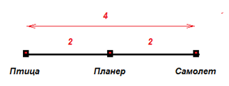
Мы использовали внешнюю информацию {Х} о положении изучаемых объектов в мире. То есть это описание «мира», каков мир есть. Мир представлен нам экспериментальными данными, примерами.
Заметим, что модель «мира» отличается от описания самого «мира» и находится в обученной матрице, в мозге экспертной системы. Ищем различия между построенными системой классами, то есть вычитаем один столбец матрицы коэффициентов из другого. Тем самым мы подсчитываем разницу между классами «птица», «самолет», «планер» в сознании самой системы, которая как-то отражает сейчас наблюдаемый ею мир.
Вычисляем модель в мозге системы, определив различия между объектами в «сознании» системы, то есть в коэффициентах aij.
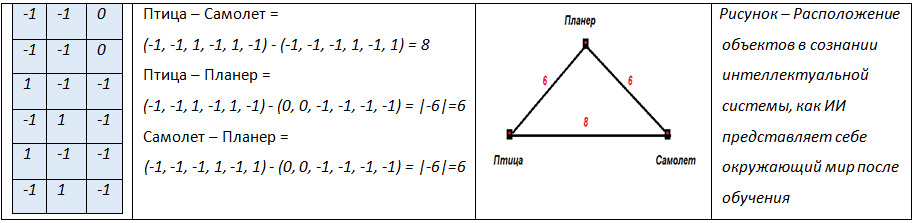
Обратите внимание, рисунок «Объекты в «мире» и рисунок «Объекты в «сознании» системы» не совпадают, но в чём-то подобны. Планер, например, находится между самолетом и птицей. Мир мозгом познан не абсолютно. Модель не является 100% отражением мира, однако является его подобием. Если продолжать обучать систему примерами, то виртуальная модель «мира в сознании системы» будет приближаться к модели реального «мира».
Обратите внимание, что система сама пришла к выводу, что мир её объектов двухмерен. Размерность пространства мира продиктована не нашими желаниями, а свойствами меры и объектов в нём.
Прогноз – важнейшее свойство ЭС
Важнейшим свойством интеллектуальных систем является их способность работать с новыми объектами, которые им ранее при обучении не предъявлялись. Это говорит о том, что система есть не база данных, содержащая набор всех фактов, а модель - знание, зависимость, уравнение. В уравнение вшита способность описывать множество значений переменных, удовлетворяющих ему. Модель обобщает данные, устанавливая причинно-следственную связь.
Построение модели, вывод знания из фактов - цель и отличительная особенность ИИ.
Испытаем способность построенной модели к предсказанию на новом неизвестном ей из предыдущих примеров объекте. Система ищет наиболее похожий к нему из известных ей классов. Предъявим экспертной системе ракету (010100). Если ассоциация будет верна, то система интеллектуальна.
| -1 | -1 | 0 | ||
| -1 | -1 | 0 | ||
| (0 1 0 1 0 0) * | 1 | -1 | -1 | = max(-2, 0,-1) → "самолёт" |
| -1 | 1 | -1 | ||
| 1 | -1 | -1 | ||
| -1 | 1 | -1 |
Ракета опознаётся как самолет (класс y2), что в принципе верно. Уверенность опознания при этом системы снизилась, например, расстояние между баллами, что «ракета — это планер», и баллами, что «ракета — это самолет», равно 1.
Найдем на рисунке, где в «мире» находится ракета.
Птица – Самолет = (1, 1, 1, 0, 1, 0) - (1, 1, 0, 1, 0, 1) = 4
Птица – Планер = (1, 1, 1, 0, 1, 0) - (1, 1, 0, 0, 0, 0) = 2
Самолет – Планер = (1, 1, 0, 1, 0, 1) - (1, 1, 0, 0, 0, 0) = 2
Птица - Ракета = (1, 1, 1, 0, 1, 0) – (0, 1, 0, 1, 0, 0) = 4
Самолет – Ракета = (1, 1, 0, 1, 0, 1) – (0, 1, 0, 1, 0, 0) = 2
Планер – Ракета = (1, 1, 0, 0, 0, 0) – (0, 1, 0, 1, 0, 0) = 2
Проведем на рисунке циркулем окружности радиусами, равными вычисленным расстояниям, от центров соответствующих классов, и найдем место, где точки на окружностях наиболее близки друг к другу.
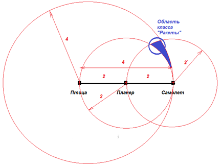
Подставляя значения найденных коэффициентов aij в уравнения Y = F(X), имеем:
Y1 = -x1-x2+x3-x4+x5-x6
Y2 = -x1-x2-x3+x4-x5+x6
Y3 = -x3-x4-x5-x6.
Уравнения представляют собой геометрически три гиперплоскости в шестимерном гиперпространстве признаков. Плоскости делят пространство на полупространства (в одной части полупространства - Y>0, в другой – Y<0, на границе Y=0). Пересечение гиперплоскостей образует гипертела – классы (класс «птицы», класс «самолеты», класс «планеры»).
Значения коэффициентов уравнений, которые подбирает система для разделения классов, в процессе её обучения изменяются. Коэффициенты aij определяют наклон гиперплоскостей к осям системы координат пространства. То есть гиперплоскости в процессе обучения вращаются. Изменение положения гиперплоскостей происходит таким образом, чтобы они встали, максимально четко разделив области (классы) друг от друга, – посредине между классами.
Построим одно из двухмерных сечений шестимерного гиперпространства в плоскости листа. Например, рассматривая две оси: x3 (клюв) и x4 (двигатель), можно изобразить след разделяющей поверхности на этой плоскости:
y1 = …+x3-x4+…
y2 = …-x3+x4+…
y3 = …-x3-x4+…
Уравнение плоскости для y1: x3-x4=0 или x3 = x4. На этой линии расположены точки, удовлетворяющие уравнению y1=0. Такая прямая (гиперплоскость) называется разделяющим правилом, так как по одну её сторону расположены одни классы, а по другую – другие классы.
Класс птиц y1 представлен объектом в точке (x3=1,x4=0), то есть «клюв есть», «двигателя нет». Класс самолетов y2 представлен объектом в точке (x3=0,x4=1), то есть «клюва нет», «двигатель есть». Поставим на осях эти точки с указанными координатами.
Разделяющая линия x3=x4 проведена так, что находится на максимальном удалении от обоих классов, что обеспечивает им максимальное различение системой (расстояние до разделяющей линии).
Нестандартные объекты (экзотическая птица, игрушечный самолет) могут проникать в чужое полупространство и опознаваться неправильно. В таких случаях экспертную систему необходимо доучивать повторением примеров или этими новыми примерами. В процессе дообучения разделяющие плоскости будут продолжать поворачиваться так, чтобы ещё лучше разделить классы между собой с учетом новой информации. Каждая точка подтягивает к себе соответствующую разделяющую плоскость или отталкивает.
Рисунок показывает предполагаемое расположение разделяющих правил при наличии многих классов. Точками обозначены экземпляры классов, гиперплоскостями – правила, областями - классы.
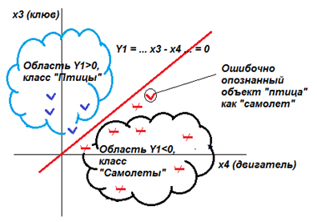
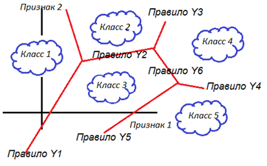
В итоге отметим уровень интеллектуальности метода: формулу придумал человек, наилучшие коэффициенты модели подобрала машина.
Генетическая связь экспертной системы и регрессионной модели
Посмотрим на задачу с другой стороны.
| Крылья, X1 | Хвост, X2 | Клюв, X3 | Двигатель, X4 | Оперение, X5 | Шасси, X6 | |
|---|---|---|---|---|---|---|
| Птица, Y1 | 1 | 1 | 1 | 0 | 1 | 0 |
| Самолёт, Y2 | 1 | 1 | 0 | 1 | 0 | 1 |
| Планер, Y3 | 1 | 1 | 0 | 0 | 0 | 0 |
Посмотрите внимательно, столбец Х3 повторяет столбец Х5. Таким образом, один из признаков дублирует полностью другой и одним из них можно пренебречь. Также дублируются столбцы Х4 и Х6.
Заметим, что столбцы Х1 и Х2 не только дублируют друг друга, но от них вообще ничего не зависит, у всех классов всегда есть крылья и хвост. Это вообще неинформативные признаки, не дифференцирующие, с помощью их ни что ни от чего отличить нельзя. Исключаем столбцы Х1 и Х2 из базы данных. Закодируем признак Y - переведем его из качественной области (птица, самолет, планер) в количественную (0,8,4). Логично, что планер находится где-то между птицей и самолетом, как мы это ранее выяснили.
Исходные данные для построения модели упрощаются:
| Значение Y | Клюв, X3 Оперение, X5 |
Двигатель, X4 Шасси, X6 |
|
|---|---|---|---|
| Птица, Y1 | 0 | 1 | 0 |
| Самолёт, Y2 | 8 | 0 | 1 |
| Планер, Y3 | 4 | 0 | 0 |
Ищем уравнение в линейном виде: Y = a*X3+b*Х4+c. Для этого составим три уравнения, исходя из трех строк базы данных.
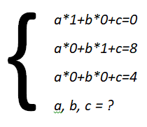
Решая систему уравнений, получаем: a=-4, b=4, c=4. Или Y = -4*X3 + 4*X4 +4.
Проиллюстрируем геометрически полученную модель. Поставим точки (записи базы данных, экземпляры, факты), используя их координаты на осях Х3 и Х4, – птица (0,1), самолет (1,0), планер (0,0).
Изобразим плоскость Y = -4*X3 + 4*X4 +4 для разных значений Y={0,4,8} в виде семейства параллельных прямых в виде следов пересечения плоскости модели Y=f(X3,X4) и плоскостей Y=const, спроецированных на двухмерную координатную плоскость (X3,X4). При Y=0 имеем: 0=-4*Х3+4*Х4+4 или Х3=Х4+1. При Y=4 имеем: 4=-4*Х3+4*Х4+4 или Х3=Х4. При Y=8 имеем 8=-4*X3+4*X4+4 или Х3=Х4-1.
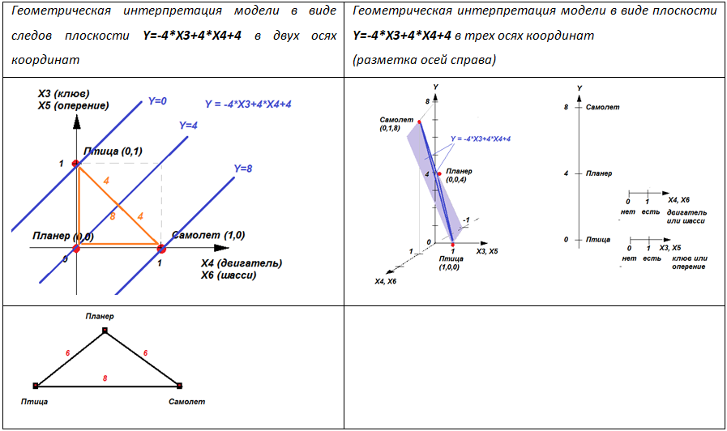
Видно, что при Y=0 значение класса Y соответствует Птице. При Y=4 – классу Планер. При Y=8 – классу Самолет. Плоскость регрессионной модели проходит через соответствующую точку.
Отметим, что расстояние по координате Y от класса Птица до класса Планер равно 4, от Планера до Самолета равно 4 (оранжевый треугольник), между классами Птица и Самолет расстояние Y=8, что соответствует ранее построенному рисунку.
Как связаны между собой регрессионное уравнение Y=-4X3+4*X4+4 и уравнения экспертной системы:
Y1=-x1-x2+x3-x4+x5-x6
Y2=-x1-x2-x3+x4-x5+x6
Y3=-x3-x4-x5-x6 ?
Убирая лишние Х1 и Х2, сжимая дубли Х3 и Х5, Х4 и Х6, имеем:
Y1=+x3-x4
Y2=-x3+x4
Y3=-x3-x4.
Если выбирать класс по признаку: max(Y1,Y2,Y3), то для Птицы Y1>Y2 и Y1>Y3, а, значит, должны одновременно выполняться неравенство Х3-Х4>-X3+X4 и неравенство X3-X4>-X3-X4. Решая их совместно, получаем, что Птицы занимают область (Х3>X4)&(X3>0) в пространстве осей {Х3,Х4}.
Поскольку, экземпляр Самолет находится в области с Y2>Y1 и Y2>Y3, а, значит, -Х3+Х4>X3-X4 и -X3+X4>-X3-X4, то Самолеты занимают область (Х4>X3)&(X4>0) в пространстве осей {Х3,Х4}.
Поскольку, экземпляр Планер находится в области с Y3>Y1 и Y3>Y2, а, значит, -Х3-Х4>X3-X4 и -X3-X4>-X3+X4, то Планеры занимают область (Х3<0)&(X4<0) в пространстве осей {Х3,Х4}.
На рисунке это обозначено тремя областями, разделёнными тремя линиями-границами. Каждая область – определённый класс. В областях красными точками показаны типичные экземпляры каждого класса (самолет, птица и планер).
На рисунке совмещены две иллюстрации: области и границы модели экспертной системы и геометрический образ регрессионной модели. В трёхмерном пространстве регрессионная модель изображена в виде плоскости, области экспертной системы и их границы (Х3=Х4, Х4=0, Х3=0) выделены на рисунке цветом.
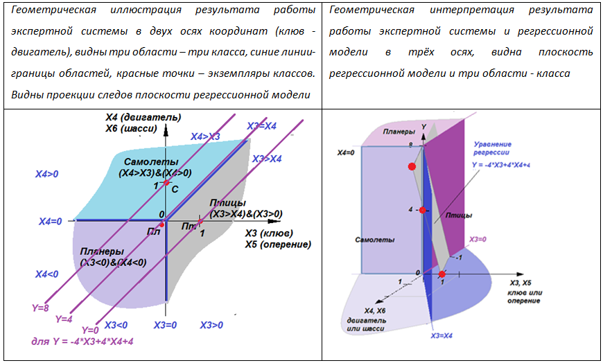
Следствя
- Количество признаков соответствует размерности пространства. Объекты и факты – точки в пространстве признаков, классы – гиперобласти. Уравнения модели экспертной системы задают границы областей классов.
- Удалённые примеры оттягивают на себя поверхность раздела классов.
- Объекты вблизи поверхности раздела классов нечетки и могут быть ложно классифицированы.
- Некоторые переменные оказывают бОльшее влияние на результат, чем другие. Это следует учитывать при ранжировании вопросов, предъявляемых интеллектуальной системой пользователю при экспертизе.
- Некоторые переменные вообще не влияют на результат и их лучше исключить из экспертизы как неинформативные.
- Нормализация системы – выбор пользователя.
- На скорость обучения системы существенно влияет величина шага обучения. С малым шагом система обучается медленно, тупит, проявляя консерватизм. Большой шаг соответствует разболтке системы, проявляя авантюризм.
- Переменные могут принимать непрерывные значения, сигнализируя о нечёткости наших представлений при различении объектов.
- Несколько экспертных систем могут быть объединены в единую систему путем слияния обученных матриц коэффициентов.
Примечания. При борьбе с неудачами при настройке системы можно использовать следующие приемы:
- Введение в рассмотрение дополнительного признака. Увеличение размерности пространства позволяет
решить проблему Минского (исключающее ИЛИ).
То, что нельзя разделить в плоскости прямой линией, можно разделить гиперплоскостью в пространстве более
высокой размерности.
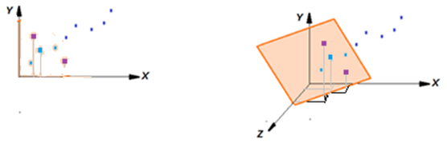
Введение дополнительной переменной z позволило отделить плоскостью (линейной формой) сиреневые точки от синих -
Введение дополнительного класса. Слишком объёмный класс разбивают на подклассы. Увеличение количества
подпространств, дробление гипертел позволяет упростить
задачу построения модели за счет линеаризации описываемых областей. Например, класс «Аисты» можно разбить на
два класса «Черные аисты» и «Белые аисты».
Границы классов при этом могут стать линейными.
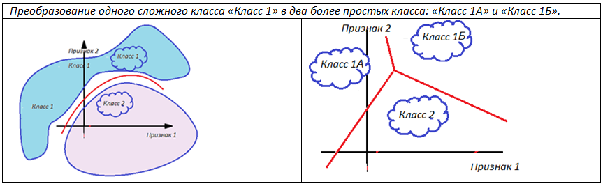
- Введение дополнительной связи. Линейную систему переводят в нелинейную, дополняя её уравнение
нелинейными членами. Это позволяет некоторые экзотические примеры
вблизи раздела областей обойти плавными непрямыми линиями. Приём соответствует введению связей между
признаками. Например, так: Y = … + x3 + x4 + x3*x4 + x5 + … .
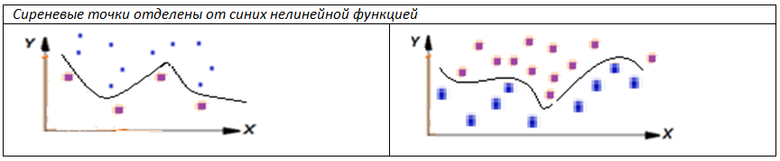
Задания
- Придумайте свою задачу для экспертной системы. Например «симптомы - болезни», «ситуация - действие», «ингредиенты - блюда». Предъявляя системе примеры, настройте ее. Проверьте правильность работы системы на примерах. Сделайте прогноз. Выпишите модель системы и нарисуйте ее геометрический образ. Исследуйте емкость ЭС, уменьшая количество признаков, увеличивая количество классов. При каком расположении примеров система обучается дольше?
- Загрузите упражнение с сайта. Задайте свои примеры в виде исходного файла. Система автоматически рассчитает модель. Понаблюдайте как располагаются и вращаются разделяющие плоскости в процессе обучения. Меняя ракурс на гиперпространство, рассмотрите расположение гиперплоскостей, относительно заданных примеров.
Видео:
| Лекция 14. Метод искусственного интеллекта #4. Машина из бусинок | Лекция 16. Интерфейсы искусственного интеллекта. Моделирование пространственных систем | ||||||||||||||||
|
|||||||||||||||||